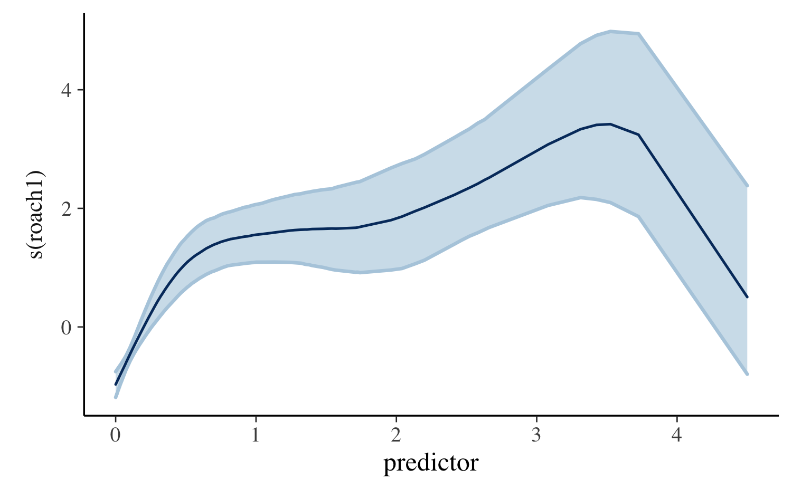
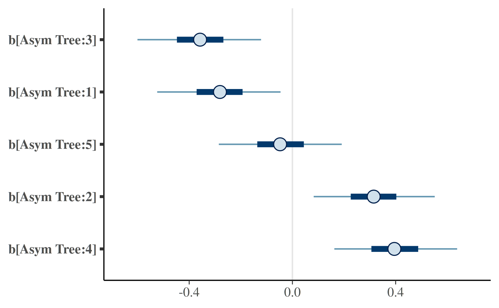
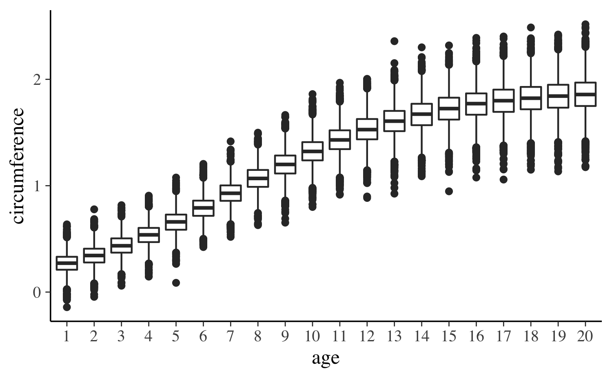

Estimating Generalized (Non-)Linear Models with Group-Specific Terms with rstanarm
Jonah Gabry and Ben Goodrich
2025-12-01
Source:vignettes/glmer.Rmd
glmer.RmdIntroduction
This vignette explains how to use the stan_lmer,
stan_glmer, stan_nlmer, and
stan_gamm4 functions in the rstanarm
package to estimate linear and generalized (non-)linear models with
parameters that may vary across groups. Before continuing, we recommend
reading the vignettes (navigate up one level) for the various ways to
use the stan_glm function. The Hierarchical Partial
Pooling vignette also has examples of both stan_glm
and stan_glmer.
GLMs with group-specific terms
Models with this structure are refered to by many names: multilevel models, (generalized) linear mixed (effects) models (GLMM), hierarchical (generalized) linear models, etc. In the simplest case, the model for an outcome can be written as \[\mathbf{y} = \alpha + \mathbf{X} \boldsymbol{\beta} + \mathbf{Z} \mathbf{b} + \boldsymbol{\epsilon},\] where \(\mathbf{X}\) is a matrix predictors that is analogous to that in Generalized Linear Models and \(\mathbf{Z}\) is a matrix that encodes deviations in the predictors across specified groups.
The terminology for the unknowns in the model is diverse. To frequentists, the error term consists of \(\mathbf{Z}\mathbf{b} + \boldsymbol{\epsilon}\) and the observations within each group are not independent conditional on \(\mathbf{X}\) alone. Since, \(\mathbf{b}\) is considered part of the random error term, frequentists allow themselves to make distributional assumptions about \(\mathbf{b}\), invariably that it is distributed multivariate normal with mean vector zero and structured covariance matrix \(\boldsymbol{\Sigma}\). If \(\epsilon_i\) is also distributed (univariate) normal with mean zero and standard deviation \(\sigma\), then \(\mathbf{b}\) can be integrated out, which implies \[\mathbf{y} \thicksim \mathcal{N}\left(\alpha + \mathbf{X}\boldsymbol{\beta}, \sigma^2 \mathbf{I}+\mathbf{Z}^\top \boldsymbol{\Sigma} \mathbf{Z} \right),\] and it is possible to maximize this likelihood function by choosing proposals for the parameters \(\alpha\), \(\boldsymbol{\beta}\), and (the free elements of) \(\boldsymbol{\Sigma}\).
Consequently, frequentists refer to \(\mathbf{b}\) as the random effects because they capture the random deviation in the effects of predictors from one group to the next. In contradistinction, \(\alpha\) and \(\boldsymbol{\beta}\) are referred to as fixed effects because they are the same for all groups. Moreover, \(\alpha\) and \(\boldsymbol{\beta}\) persist in the model in hypothetical replications of the analysis that draw the members of the groups afresh every time, whereas \(\mathbf{b}\) would differ from one replication to the next. Consequently, \(\mathbf{b}\) is not a “parameter” to be estimated because parameters are unknown constants that are fixed in repeated sampling.
Bayesians condition on the data in-hand without reference to repeated sampling and describe their beliefs about the unknowns with prior distributions before observing the data. Thus, the likelihood in a simple hierarchical model in rstarnarm is \[\mathbf{y} \thicksim \mathcal{N}\left(\alpha + \mathbf{X}\boldsymbol{\beta} + \mathbf{Z}\mathbf{b}, \sigma^2 \mathbf{I}\right)\] and the observations are independent conditional on \(\mathbf{X}\) and \(\mathbf{Z}\). In this formulation, there are
- intercept(s) and coefficients that are common across groups
- deviations in the intercept(s) and / or coefficients that vary across groups
Bayesians are compelled to state their prior beliefs about all unknowns and the usual assumption (which is maintained in rstanarm) is that \(\mathbf{b} \thicksim \mathcal{N}\left(\mathbf{0},\boldsymbol{\Sigma}\right),\) but it is then necessary to state prior beliefs about \(\boldsymbol{\Sigma}\), in addition to \(\alpha\), \(\boldsymbol{\beta}\), and \(\sigma\).
One of the many challenges of fitting models to data comprising multiple groupings is confronting the tradeoff between validity and precision. An analysis that disregards between-group heterogeneity can yield parameter estimates that are wrong if there is between-group heterogeneity but would be relatively precise if there actually were no between-group heterogeneity. Group-by-group analyses, on the other hand, are valid but produces estimates that are relatively imprecise. While complete pooling or no pooling of data across groups is sometimes called for, models that ignore the grouping structures in the data tend to underfit or overfit (Gelman et al.,2013). Hierarchical modeling provides a compromise by allowing parameters to vary by group at lower levels of the hierarchy while estimating common parameters at higher levels. Inference for each group-level parameter is informed not only by the group-specific information contained in the data but also by the data for other groups as well. This is commonly referred to as borrowing strength or shrinkage.
In rstanarm, these models can be estimated using the
stan_lmer and stan_glmer functions, which are
similar in syntax to the lmer and glmer
functions in the lme4 package. However, rather than
performing (restricted) maximum likelihood (RE)ML estimation, Bayesian
estimation is performed via MCMC. The Bayesian model adds independent
prior distributions on the regression coefficients (in the same way as
stan_glm) as well as priors on the terms of a decomposition
of the covariance matrices of the group-specific parameters. These
priors are discussed in greater detail below.
Priors on covariance matrices
In this section we discuss a flexible family of prior distributions for the unknown covariance matrices of the group-specific coefficients.
Overview
For each group, we assume the vector of varying slopes and intercepts is a zero-mean random vector following a multivariate Gaussian distribution with an unknown covariance matrix to be estimated. Unfortunately, expressing prior information about a covariance matrix is not intuitive and can also be computationally challenging. When the covariance matrix is not \(1\times 1\), it is often both much more intuitive and efficient to work instead with the correlation matrix and variances. When the covariance matrix is \(1\times 1\), we still denote it as \(\boldsymbol{\Sigma}\) but most of the details in this section do not apply.
The variances are in turn decomposed into the product of a simplex
vector (probability vector) and the trace of the implied covariance
matrix, which is defined as the sum of its diagonal elements. Finally,
this trace is set equal to the product of the order of the matrix and
the square of a scale parameter. This implied prior on a covariance
matrix is represented by the decov (short for decomposition
of covariance) function in rstanarm.
Details
Using the decomposition described above, the prior used for a correlation matrix \(\Omega\) is called the LKJ distribution and has a probability density function proportional to the determinant of the correlation matrix raised to a power of \(\zeta\) minus one:
\[ f(\Omega | \zeta) \propto \text{det}(\Omega)^{\zeta - 1}, \quad \zeta > 0. \]
The shape of this prior depends on the value of the regularization parameter, \(\zeta\) in the following ways:
- If \(\zeta = 1\) (the default), then the LKJ prior is jointly uniform over all correlation matrices of the same dimension as \(\Omega\).
- If \(\zeta > 1\), then the mode of the distribution is the identity matrix. The larger the value of \(\zeta\) the more sharply peaked the density is at the identity matrix.
- If \(0 < \zeta < 1\), then the density has a trough at the identity matrix.
The \(J \times J\) covariance matrix \(\Sigma\) of a random vector \(\boldsymbol{\theta} = (\theta_1, \dots, \theta_J)\) has diagonal entries \({\Sigma}_{jj} = \sigma^2_j = \text{var}(\theta_j)\). Therefore, the trace of the covariance matrix is equal to the sum of the variances. We set the trace equal to the product of the order of the covariance matrix and the square of a positive scale parameter \(\tau\):
\[\text{tr}(\Sigma) = \sum_{j=1}^{J} \Sigma_{jj} = J\tau^2.\]
The vector of variances is set equal to the product of a simplex vector \(\boldsymbol{\pi}\) — which is non-negative and sums to 1 — and the scalar trace: \(J \tau^2 \boldsymbol{\pi}\). Each element \(\pi_j\) of \(\boldsymbol{\pi}\) then represents the proportion of the trace (total variance) attributable to the corresponding variable \(\theta_j\).
For the simplex vector \(\boldsymbol{\pi}\) we use a symmetric Dirichlet prior, which has a single concentration parameter \(\gamma > 0\):
- If \(\gamma = 1\) (the default), then the prior is jointly uniform over the space of simplex vectors with \(J\) elements.
- If \(\gamma > 1\), then the prior mode corresponds to all variables having the same (proportion of total) variance, which can be used to ensure that the posterior variances are not zero. As the concentration parameter approaches infinity, this mode becomes more pronounced.
- If \(0 < \gamma < 1\), then the variances are more polarized.
If all the elements of \(\boldsymbol{\theta}\) were multiplied by the same number \(k\), the trace of their covariance matrix would increase by a factor of \(k^2\). For this reason, it is sensible to use a scale-invariant prior for \(\tau\). We choose a Gamma distribution, with shape and scale parameters both set to \(1\) by default, implying a unit-exponential distribution. Users can set the shape hyperparameter to some value greater than one to ensure that the posterior trace is not zero. In the case where \(\boldsymbol{\Sigma}\) is \(1\times 1\), \(\tau\) is the cross-group standard deviation in the parameters and its square is the variance (so the Gamma prior with its shape and scale directly applies to the cross-group standard deviation in the parameters).
Comparison with lme4
There are several advantages to estimating these models using rstanarm rather than the lme4 package. There are also a few drawbacks. In this section we briefly discuss what we find to be the two most important advantages as well as an important disadvantage.
Advantage: better uncertainty estimates
While lme4 uses (restricted) maximum likelihood (RE)ML estimation, rstanarm enables full Bayesian inference via MCMC to be performed. It is well known that (RE)ML tends to underestimate uncertainties because it relies on point estimates of hyperparameters. Full Bayes, on the other hand, propagates the uncertainty in the hyperparameters throughout all levels of the model and provides more appropriate estimates of uncertainty for models that consist of a mix of common and group-specific parameters.
Advantage: incorporate prior information
The stan_glmer and stan_lmer functions
allow the user to specify prior distributions over the regression
coefficients as well as any unknown covariance matrices. There are
various reasons to specify priors, from helping to stabilize computation
to incorporating important information into an analysis that does not
enter through the data.
Disadvantage: speed
The benefits of full Bayesian inference (via MCMC) come with a cost.
Fitting models with (RE)ML will tend to be much faster than fitting a
similar model using MCMC. Speed comparable to lme4 can
be obtained with rstanarm using approximate Bayesian
inference via the mean-field and full-rank variational algorithms (see
help("rstanarm-package", "rstanarm") for details). These
algorithms can be useful to narrow the set of candidate models in large
problems, but MCMC should always be used for final statistical
inference.
Relationship to glmer
In the lme4 package, there is a fundamental
distinction between the way that Linear Mixed Models and Generalized
Linear Mixed Models are estimated. In Linear Mixed Models, \(\mathbf{b}\) can be integrated out
analytically, leaving a likelihood function that can be maximized over
proposals for the parameters. To estimate a Linear Mixed Model, one can
call the lmer function.
Generalized Linear Mixed Models are appropriate when the conditional
mean of the outcome is determined by an inverse link function, \(\boldsymbol{\mu} = g\left(\alpha + \mathbf{X}
\boldsymbol{\beta} + \mathbf{Z}\mathbf{b}\right)\). If \(g\left(\cdot\right)\) is not the identity
function, then it is not possible to integrate out \(\mathbf{b}\) analytically and numerical
integration must be used. To estimate a Generalized Linear Mixed Model,
one can call the glmer function and specify the
family argument.
In the rstanarm package, there is no such
fundamental distinction; in fact stan_lmer simply calls
stan_glmer with
family = gaussian(link = "identity"). Bayesians do not
(have to) integrate \(\mathbf{b}\) out
of the likelihood and if \(\mathbf{b}\)
is not of interest, then the margins of its posterior distribution can
simply be ignored.
Relationship to gamm4
The rstanarm package includes a
stan_gamm4 function that is similar to the
gamm4 function in the gamm4 package, which
is in turn similar to the gamm function in the
mgcv package. The substring gamm stands
for Generalized Additive Mixed Models, which differ from Generalized
Additive Models (GAMs) due to the presence of group-specific terms that
can be specified with the syntax of lme4. Both GAMs and
GAMMs include nonlinear functions of (non-categorical) predictors called
“smooths”. In the example below, so-called “thin-plate splines” are used
to model counts of roaches where we might fear that the number of
roaches in the current period is an exponentially increasing function of
the number of roaches in the previous period. Unlike
stan_glmer, in stan_gamm4 it is necessary to
specify group-specific terms as a one-sided formula that is passed to
the random argument as in the lme function in
the nlme package.
library(rstanarm)
data(roaches)
roaches$roach1 <- roaches$roach1 / 100
roaches$log_exposure2 <- log(roaches$exposure2)
post <- stan_gamm4(
y ~ s(roach1) + treatment + log_exposure2,
random = ~(1 | senior),
data = roaches,
family = neg_binomial_2,
QR = TRUE,
cores = 2,
chains = 2,
adapt_delta = 0.99,
seed = 12345
)
plot_nonlinear(post)
Here we see that the relationship between past and present roaches is estimated to be nonlinear. For a small number of past roaches, the function is steep and then it appears to flatten out, although we become highly uncertain about the function in the rare cases where the number of past roaches is large.
Relationship to nlmer
The stan_gamm4 function allows designated predictors to
have a nonlinear effect on what would otherwise be called the “linear”
predictor in Generalized Linear Models. The stan_nlmer
function is similar to the nlmer function in the
lme4 package, and essentially allows a wider range of
nonlinear functions that relate the linear predictor to the conditional
expectation of a Gaussian outcome.
To estimate an example model with the nlmer function in
the lme4 package, we start by rescaling the outcome and
main predictor(s) by a constant
data("Orange", package = "datasets")
Orange$age <- Orange$age / 100
Orange$circumference <- Orange$circumference / 100Although doing so has no substantive effect on the inferences
obtained, it is numerically much easier for Stan and for
lme4 to work with variables whose units are such that
the estimated parameters tend to be single-digit numbers that are not
too close to zero. The nlmer function requires that the
user pass starting values to the ironically-named self-starting
non-linear function:
startvec <- c(Asym = 2, xmid = 7.25, scal = 3.5)
library(lme4)
nm1 <- nlmer(circumference ~ SSlogis(age, Asym, xmid, scal) ~ Asym|Tree,
data = Orange, start = startvec)
summary(nm1)Warning in vcov.merMod(object, use.hessian = use.hessian): variance-covariance matrix computed from finite-difference Hessian is
not positive definite or contains NA values: falling back to var-cov estimated from RXWarning in vcov.merMod(object, correlation = correlation, sigm = sig): variance-covariance matrix computed from finite-difference Hessian is
not positive definite or contains NA values: falling back to var-cov estimated from RXNonlinear mixed model fit by maximum likelihood ['nlmerMod']
Formula: circumference ~ SSlogis(age, Asym, xmid, scal) ~ Asym | Tree
Data: Orange
AIC BIC logLik -2*log(L) df.resid
-49.2 -41.4 29.6 -59.2 30
Scaled residuals:
Min 1Q Median 3Q Max
-1.9170 -0.5421 0.1754 0.7116 1.6820
Random effects:
Groups Name Variance Std.Dev.
Tree Asym 0.100149 0.31646
Residual 0.006151 0.07843
Number of obs: 35, groups: Tree, 5
Fixed effects:
Estimate Std. Error t value
Asym 1.9205 0.1558 12.32
xmid 7.2791 0.3444 21.14
scal 3.4807 0.2631 13.23
Correlation of Fixed Effects:
Asym xmid
xmid 0.384
scal 0.362 0.762Note the warning messages indicating difficulty estimating the variance-covariance matrix. Although lme4 has a fallback mechanism, the need to utilize it suggests that the sample is too small to sustain the asymptotic assumptions underlying the maximum likelihood estimator.
In the above example, we use the SSlogis function, which
is a lot like the logistic CDF, but with an additional Asym
argument that need not be one and indicates what value the function
approaches for large values of the first argument. In this case, we can
interpret the asymptote as the maximum possible circumference for an
orange. However, this asymptote is allowed to vary from tree to tree
using the Asym | Tree syntax, which reflects an assumption
that the asymptote for a randomly-selected tree deviates from the
asymptote for the population of orange trees in a Gaussian fashion with
mean zero and an unknown standard deviation.
The nlmer function supports user-defined non-linear
functions, whereas the stan_nlmer function only supports
the pre-defined non-linear functions starting with SS in
the stats package, which are
[1] "SSasymp" "SSasympOff" "SSasympOrig" "SSbiexp" "SSfol"
[6] "SSfpl" "SSgompertz" "SSlogis" "SSmicmen" "SSweibull" To fit essentially the same model using Stan’s implementation of
MCMC, we add a stan_ prefix
post1 <- stan_nlmer(circumference ~ SSlogis(age, Asym, xmid, scal) ~ Asym|Tree,
data = Orange, cores = 2, seed = 12345, init_r = 0.5)
post1stan_nlmer
family: gaussian [inv_SSlogis]
formula: circumference ~ SSlogis(age, Asym, xmid, scal) ~ Asym | Tree
observations: 35
------
Median MAD_SD
Asym 1.9 0.1
xmid 7.2 0.4
scal 3.4 0.3
Auxiliary parameter(s):
Median MAD_SD
sigma 0.1 0.0
Error terms:
Groups Name Std.Dev.
Tree Asym 0.31
Residual 0.09
Num. levels: Tree 5
------
* For help interpreting the printed output see ?print.stanreg
* For info on the priors used see ?prior_summary.stanregIn stan_nlmer, it is not necessary to supply starting
values; however, in this case it was necessary to specify the
init_r argument so that the randomly-chosen starting values
were not more than \(0.5\) away from
zero (in the unconstrained parameter space). The default value of \(2.0\) produced suboptimal results.
As can be seen, the posterior medians and estimated standard
deviations in the MCMC case are quite similar to the maximum likelihood
estimates and estimated standard errors. However,
stan_nlmer produces uncertainty estimates for the
tree-specific deviations in the asymptote, which are considerable.
plot(post1, regex_pars = "^[b]")
As can be seen, the age of the tree has a non-linear effect on the predicted circumference of the tree (here for a out-of-sample tree):
nd <- data.frame(age = 1:20, Tree = factor("6", levels = 1:6))
PPD <- posterior_predict(post1, newdata = nd)
PPD_df <- data.frame(age = as.factor(rep(1:20, each = nrow(PPD))),
circumference = c(PPD))
ggplot(PPD_df, aes(age, circumference)) + geom_boxplot()
If we were pharmacological, we could evaluate drug concentration using a first-order compartment model, such as
post3 <- stan_nlmer(conc ~ SSfol(Dose, Time, lKe, lKa, lCl) ~
(0 + lKe + lKa + lCl | Subject), data = Theoph,
cores = 2, seed = 12345,
QR = TRUE, init_r = 0.25, adapt_delta = 0.999)
pairs(post3, regex_pars = "^l")
pairs(post3, regex_pars = "igma")However, in this case the posterior distribution is bimodal Thus, you
should always be running many chains when using Stan, especially
stan_nlmer.
Conclusion
There are model fitting functions in the rstanarm package that can do essentially all of what can be done in the lme4 and gamm4 packages — in the sense that they can fit models with multilevel structure and / or nonlinear relationships — and propagate the uncertainty in the parameter estimates to the predictions and other functions of interest. The documentation of lme4 and gamm4 has various warnings that acknowledge that the estimated standard errors, confidence intervals, etc. are not entirely correct, even from a frequentist perspective.
A frequentist point estimate would also completely miss the second
mode in the last example with stan_nlmer. Thus, there is
considerable reason to prefer the rstanarm variants of
these functions for regression modeling. The only disadvantage is the
execution time required to produce an answer that properly captures the
uncertainty in the estimates of complicated models such as these.